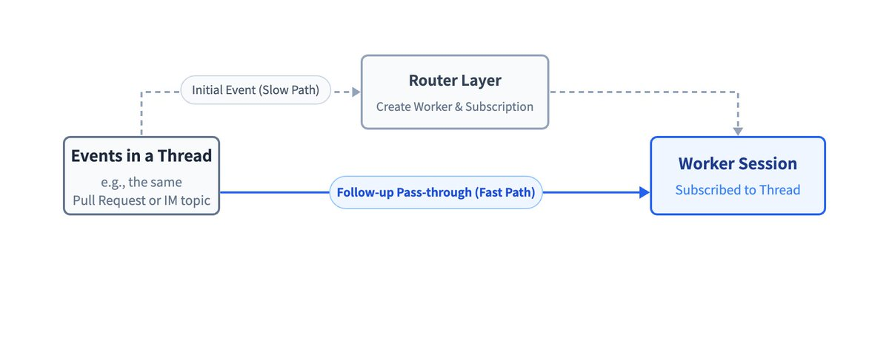
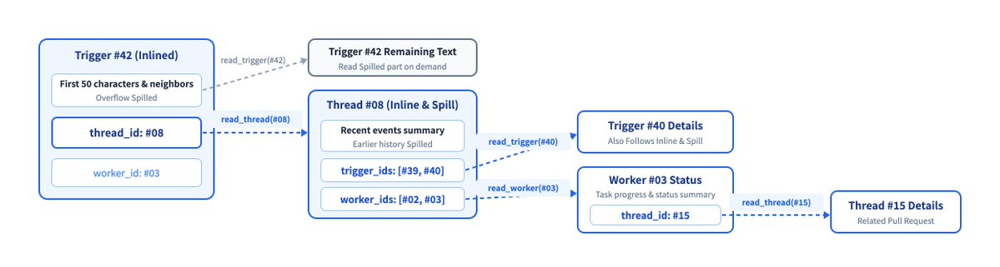
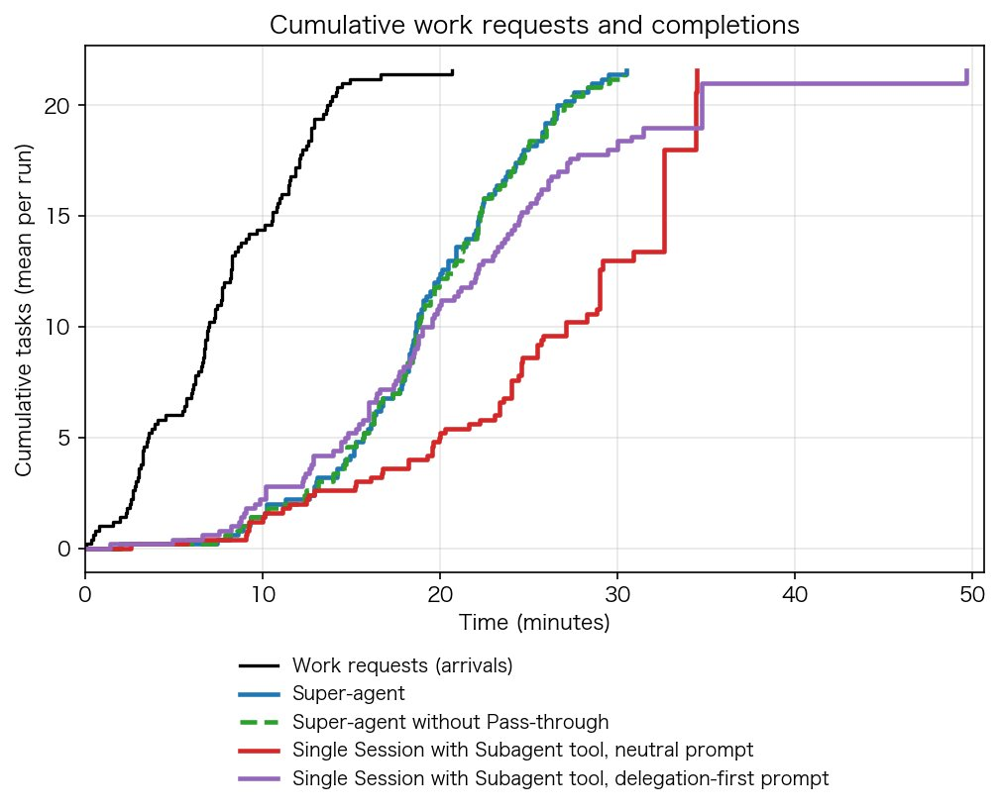

Khám phá thiết kế Super-agent: Hướng tới hệ thống agent tự chủ hơn
Bản dịch tiếng Việt của bài X Article Exploring Super-agent Design: Towards a More Autonomous Agent System bởi @DeepSeekHarness. Bài gốc ghi là bản dịch máy từ tiếng Trung; bản quyền thuộc DeepSeek Harness / DeepSeek. Prototype liên quan: dsh-superagent-prototype (GitHub). Bài dịch chỉ nhằm chia sẻ kỹ thuật; mọi quyền đối với nội dung gốc thuộc về tác giả/DeepSeek.

Bài gốc viết bằng tiếng Trung. Đây là bản dịch máy sang tiếng Anh.
Bài viết thảo luận các ý tưởng kiến trúc. Đây không phải giới thiệu tính năng hiện có của DeepSeek Harness.
1. Super-agent
Trong năm qua, các coding agent và các agent đơn nhiệm vụ khác đã cho thấy mô hình có thể dùng công cụ để giải quyết bài toán phức tạp, trong khi cần ngày càng ít giám sát liên tục và can thiệp từng bước từ con người. Mô hình cũng giỏi hơn trong việc điều phối nhiều agent, khiến việc tổ chức và lập lịch công việc qua các session trở nên thực tế. Khi con người tham gia ít hơn vào thực thi cấp thấp, vai trò của họ dần chuyển lên các quyết định cấp cao và phê duyệt.
Mô hình tốt hơn cũng mở ra các ứng dụng mới. Gần đây, nhiều personal agent xuất hiện. Chúng kết nối trực tiếp với nhắn tin, lịch, email và nền tảng làm việc hàng ngày, theo dõi luồng sự kiện và hỗ trợ xử lý nhiệm vụ. Personal agent chỉ là một ứng dụng của cách làm việc luôn online, theo sự kiện này. Cách làm việc đó không chỉ dành cho cá nhân mà còn có giá trị trong công việc thương mại như phát triển phần mềm.
Tuy nhiên, thiết kế agent phổ biến hiện nay khó hỗ trợ cách làm việc này trên nhiều nhiệm vụ hoặc cả một nhóm. Agent vẫn lấy một session làm đơn vị công việc cơ bản, và các session tách biệt nhau. Người dùng chạy song song nhiều nhiệm vụ phải tự chuyển giữa các session và nhớ nội dung từng cái. Theo trải nghiệm của chúng tôi, một người thường chỉ theo dõi được khoảng 3 đến 5 session đang hoạt động cùng lúc. Với thiết kế này, một nhiệm vụ bị giới hạn bởi năng lực mô hình, nhưng đa nhiệm lại bị giới hạn bởi sự chú ý của con người.
Thêm CLI, MCP hoặc connector ngoài vào một agent local đơn-session hiện có giúp nó nhận tin nhắn từ bên ngoài, nhưng các hạn chế cơ bản vẫn còn. Nó vẫn chạy trong một session đồng bộ bị chặn bởi thao tác dài, ngữ cảnh từ các nhiệm vụ khác nhau bị trộn lẫn, và mọi thứ dừng khi thiết bị local offline. Duy trì cấu hình như vậy tốn nhiều công sức thủ công.
Vượt qua các giới hạn này nghĩa là tách agent khỏi mọi session đơn lẻ do người điều khiển thủ công. Thay vào đó, agent nên là một thực thể liên tục, giữ ngữ cảnh qua các session và làm nhiều nhiệm vụ phức tạp cùng lúc mà không nhiễu lẫn nhau. Chúng tôi gọi loại agent này và kiến trúc hệ thống của nó là Super-agent.
Ví dụ, instance Super-agent nội bộ của chúng tôi chạy trên DeepSeek Harness có thể tiếp tục cùng một nhiệm vụ phát triển qua IM và GitHub. Nó cũng theo dõi phản hồi trong các nhóm chat công khai và, dù không ai @-mention, vẫn tự tìm nguyên nhân gốc rồi mở Pull Request để sửa:

Cùng một nhiệm vụ tiếp tục qua nhóm chat IM và review Pull Request trên GitHub

Agent theo dõi nhóm chat công khai và, dù không bị @-mention, tìm ra bug rồi mở Pull Request để sửa
Chúng tôi tin Super-agent có bốn đặc tính cơ bản:
- Continuous (liên tục): Người dùng tương tác trực tiếp ngay nơi họ đã làm việc, như chat IM và comment GitHub, và luôn cảm thấy chỉ có một agent. Họ không phải tự hỏi session X có thông tin Y trong ngữ cảnh hay không. Ví dụ, nếu người dùng yêu cầu Plan A trên IM rồi sau đó chuyển sang Plan B trong comment Pull Request trên GitHub, agent hiểu sự thay đổi và điều chỉnh việc đang làm.
- Productive (năng suất): Phản hồi nhanh và hoàn thành song song nhiều nhiệm vụ phức tạp, mỗi nhiệm vụ ở chuẩn cao. Nó có thể nhận chỉ thị tiếp theo trước khi lệnh hoặc nhiệm vụ trước kết thúc.
- Proactive (chủ động): Không chờ chỉ thị từng bước. Nó theo dõi sự kiện trong môi trường, hành động với những việc đáng xử lý, và im lặng khi không cần.
- Persistent (bền vững): Luôn online, kết nối trực tiếp tới môi trường làm việc thực của người dùng, và tự phục hồi khi gặp bất thường trong quá trình chạy dài.
Không một vòng lặp ReAct đơn lẻ nào cung cấp đủ cả bốn đặc tính cùng lúc, nên chúng phải đến từ kiến trúc hệ thống xung quanh. Các ràng buộc thiết kế tương tự thường dẫn tới kiến trúc tương tự. Khi mục tiêu là hệ thống luôn online, phản hồi đồng thời các sự kiện môi trường, chúng tôi kỳ vọng personal agent và agent cho công việc thương mại như phát triển phần mềm sẽ hội tụ về thiết kế gần nhau. Xây dựng hệ thống như vậy cũng đặt ra nhiều bài toán giống những gì ngành hệ thống máy tính đã nghiên cứu lâu, nên nhiều ý tưởng thiết kế kinh điển từ lĩnh vực đó cũng áp dụng được ở đây.
Cách triển khai sẽ khác nhau, nhưng chúng tôi cho rằng năm module tạo nên khung cơ bản hỗ trợ các đặc tính này. Kiến trúc hai tầng (Mục 2) vừa cung cấp tương tác liên tục vừa cho concurrency năng suất. Thiết kế theo sự kiện (Mục 3) làm agent chủ động. Tương tác full-duplex đa kênh (Mục 4) giữ mỗi trao đổi với người dùng vừa liên tục vừa năng suất. Tách compute, state và môi trường (Mục 5), cùng Watchdog (Mục 6), giữ agent luôn online trên nhiều thiết bị và tự phục hồi khi có bất thường.
Sơ đồ dưới đây tổng quan kiến trúc Super-agent. Các module gắn nhãn [2] đến [6] được trình bày ở Mục 2 đến Mục 6:
![Tổng quan kiến trúc Super-agent, nhãn [2] đến [6] tương ứng Mục 2 đến Mục 6](img/p2.jpg)
Tổng quan kiến trúc Super-agent, nhãn [2] đến [6] tương ứng Mục 2 đến Mục 6
2. Kiến trúc hai tầng
Vừa hỗ trợ tương tác liên tục qua các kênh vừa hỗ trợ concurrency năng suất qua các nhiệm vụ buộc phải đánh đổi căn bản giữa tính liên tục và throughput trong cách hệ thống tổ chức session.
Đưa mọi sự kiện vào một session cho ngữ cảnh liên tục nhất, vì session đó thấy tất cả. Nhưng vòng ReAct chạy từng bước một, giới hạn tốc độ của một session: nhiệm vụ kéo dài và throughput thấp. Chi tiết trung gian của các nhiệm vụ khác nhau cũng bị xen kẽ trong một ngữ cảnh, làm giảm chất lượng kết quả.
Cho mỗi sự kiện một session mới đảo ngược đánh đổi. Cách này tối đa hóa throughput đồng thời, nhưng khi nhiệm vụ không hoàn toàn độc lập, thiếu ngữ cảnh toàn cục chung khiến kết quả bị rời rạc. Nhiều session trả lời người dùng riêng rẽ cũng làm tương tác rối.
Để có cả tính liên tục lẫn throughput, ta có thể tách công việc thành hai tầng. Tầng Router sống lâu (Mục 2.1) duy trì tính liên tục toàn cục bằng cách xử lý mọi tương tác với người và điều phối toàn cục, trong khi tầng Worker cô lập ngữ cảnh (Mục 2.2) chạy nhiệm vụ với concurrency cao, như hình dưới:

Kiến trúc hai tầng: tầng Router xử lý mọi định tuyến và tương tác bên ngoài, trong khi nhiều Worker Session cô lập thực thi nhiệm vụ đồng thời
Với kiến trúc hai tầng, hệ thống đảm nhận quản lý ngữ cảnh và thực thi đồng thời, nên người dùng ít phải nghĩ về session và luôn làm việc với cùng một Super-agent. Việc bắt người dùng tự quản lý session phần lớn là thói quen thiết kế mang từ LLM API cấp thấp. Session nên là chi tiết triển khai của hệ thống, không phải gánh nặng tư duy cho người dùng.
Trong thiết kế hiện có, một session làm hai việc: quản lý ngữ cảnh của mô hình, và là đơn vị quản lý dự án của người dùng. Khi sản phẩm được tách khỏi session bên dưới, quản lý dự án không còn phải theo biên giới session. Tương tác và quản lý nhiệm vụ nên cung cấp cho người dùng trở thành câu hỏi sản phẩm riêng, chúng tôi sẽ quay lại sau.
Hai tầng là phân chia trách nhiệm về mặt logic. Không tầng nào buộc phải triển khai thành một session duy nhất, và mỗi tầng có thể có cấu trúc nội bộ riêng. Hai mục con tiếp theo lần lượt mô tả hai tầng.
2.1 Tầng Router
Tầng Router là tầng định tuyến toàn cục sống lâu, nhận tương tác từ người ở mọi điểm vào. Mọi thông tin và quyết định xuyên nhiệm vụ hội tụ ở đó, nên nó đóng vai trò điểm tuần tự toàn cục, điểm điều phối và bộ nhớ của hệ thống. Để nút toàn cục đơn này không trở thành nút thắt hiệu năng, tầng Router được thiết kế không tự thực thi nhiệm vụ. Nó chỉ tương tác với người và phân phối nhiệm vụ, và có thể chạy mà không cần Bash tool.
Với một nút trung tâm phân phối nhiệm vụ tới nhiều nút thực thi, cấu trúc này trông giống Agent Team điển hình, nhưng trọng tâm khác nhau. Agent Team thường tách một nhiệm vụ phức tạp thành các bước và điều phối các vai làm việc trên chúng. Vì các bước thường gắn kết chặt, Team Lead thường phải hiểu sâu nhiệm vụ, lập kế hoạch nhiệm vụ con và điều phối thành viên thường xuyên, tạo tải suy luận nặng. Trong Super-agent, tầng Router chỉ phân phối nhiệm vụ và theo dõi quan hệ giữa chúng ở mức cao. Nó không phân rã từng nhiệm vụ. Ngược lại, Agent Team cũng có thể vận hành như kiến trúc hai tầng. Khi đó, prompt phải ngăn session chính tự thực thi nhiệm vụ và chỉ giới hạn nó ở tương tác bên ngoài cùng phân phối nhiệm vụ riêng cho các thành viên làm độc lập. Theo trải nghiệm của chúng tôi, công việc tầng Router thường đơn giản hơn kỳ vọng, và một mô hình nhẹ hơn thường đủ cho cả tốc độ lẫn chất lượng.
Bên trong, tầng Router cũng không buộc phải là một session duy nhất, và một phần logic có thể không cần LLM. Chúng tôi chọn thiết kế trực tiếp nhất — một LLM session sống lâu — và thấy nó ít trở thành nút thắt throughput hơn vẻ bề ngoài. Lý do: các sự kiện môi trường (Trigger ở Mục 3) đến trong một lượt suy luận được xếp hàng và xử lý chung ở lượt tiếp theo. Kết quả là batching, và xử lý chung các sự kiện chỉ thêm ít overhead:
- Khi sự kiện ngoài đến đều đặn, Trigger tới Router Session từng cái một, và mỗi phản hồi trả về nhanh.
- Khi sự kiện đến theo cụm và bắt đầu xếp hàng ở Router Session, các Trigger tích trong lượt trước được gộp tự động và tiêm chung vào lần gọi LLM tiếp theo. Vì Router Session chỉ làm tương tác và phân phối nhẹ, mỗi bước thường có đầu vào dài và đầu ra ngắn. Các Trigger gộp trong một LLM API call được tính song song trong Prefill, nên thời gian mỗi request tăng chậm hơn nhiều so với kích thước batch. Đến một mức, backlog càng lớn thì thời gian suy luận amortize trên mỗi quyết định càng thấp. Giới hạn phụ thuộc độ dài ngữ cảnh và số Trigger mô hình xử lý chính xác trong một lượt.
Mục 7.2 định lượng hiệu ứng batching bằng thí nghiệm. Kết hợp với subscription và pass-through (Mục 3.2) cùng Chain of Recall (Mục 3.3), một Router Session sống lâu duy nhất giữ ngữ cảnh liên tục và đã đủ cho quy mô nhóm hiện tại của chúng tôi.
Nếu hệ thống lớn đến mức một session thật sự không theo kịp, tầng Router có thể dùng cấu trúc lọc nhiều giai đoạn bên trong, hoặc tách thành nhiều session bằng horizontal sharding. Thiết kế nội bộ khi đó lại về cùng đánh đổi giữa tính liên tục và throughput. Sharding càng mịn thì throughput đồng thời của tầng Router càng cao, nhưng bộ nhớ và ngữ cảnh các shard chia sẻ càng ít. Đánh đổi này còn mãi cho đến khi bài toán bộ nhớ toàn cục được giải quyết.
2.2 Tầng Worker
Tầng Worker gồm các session thực thi nhiệm vụ. Mỗi Worker có ngữ cảnh cô lập và bộ công cụ thực thi đầy đủ, dành riêng cho một nhiệm vụ. Worker Session quyết định trực tiếp kết quả từng nhiệm vụ và chất lượng mã, nên thường cần mô hình mạnh nhất.
Worker không bao giờ tương tác trực tiếp với người. Quá trình suy luận và tool call của chúng không ra kênh ngoài. Thay vào đó, mỗi Worker báo trạng thái lên tầng Router, tầng này xử lý mọi phản hồi tới người dùng. Nhờ vậy hệ thống giữ cả concurrency lẫn chất lượng đầu ra, không bị rối vì nhiều session trả lời riêng.
Khi nhiệm vụ chạy đồng thời, mỗi Worker làm nhiệm vụ riêng, và các Worker ngang hàng thường không cần giao tiếp trực tiếp. Xung đột giữa Worker thường phát sinh trong môi trường làm việc chung, như cùng một Pull Request. Miễn là các Worker liên quan đều subscribe Thread của môi trường đó, chúng nhận cùng thông báo sự kiện (Mục 3.2) và có cơ hội tự phát hiện rồi giải quyết xung đột. Tầng Router chuyển tiếp số ít trường hợp cần điều phối xuyên nhiệm vụ.
Giống tầng Router, một Worker bên trong cũng không buộc phải là một session duy nhất. Với nhiệm vụ phức tạp, Worker có thể tạo subagent hoặc bản thân là một Agent Team, và điều này trong suốt với tầng Router phía trên. Cùng cấu trúc đó phù hợp cộng tác mã nguồn, nơi các nhiệm vụ độc lập như tái hiện issue, review Pull Request và phát triển tính năng có thể tiến song song mà không chặn nhau. Nó cũng phù hợp kịch bản personal agent, dù personal agent thường chỉ có một trang chat. Khi người dùng thảo luận nhiều chủ đề cùng lúc trên chat đó, trang vẫn giữ hội thoại liên tục. Trong khi đó backend có thể phân một Worker riêng cho mỗi chủ đề để làm việc và soạn phản hồi song song.
3. Trigger theo sự kiện
Để Super-agent chủ động, trước hết cần đổi thứ điều khiển hệ thống. Đầu vào chính của agent không còn là prompt người gõ từng cái vào session, mà là các sự kiện bán cấu trúc từ môi trường. Trong Super-agent, các sự kiện môi trường như tin nhóm chat, email, nhắc lịch, comment code review và kết quả CI được gọi là Trigger. Vì agent lắng nghe và phản hồi Trigger, nó không còn phải chờ lệnh của người trước mỗi lần chạy như agent đơn-session.
Các mục con dưới đây theo dõi một sự kiện môi trường từ lúc đến đến lúc xử lý, theo bốn bước xây dần lên nhau. Trước hết, chính sách hai giai đoạn kết hợp mã và mô hình lọc bỏ lượng nhiễu lớn (Mục 3.1). Tiếp theo, cơ chế subscription và pass-through định tuyến sự kiện tới Worker (Mục 3.2). Inline & Spill cùng Chain of Recall rồi tiêm ngữ cảnh dày vào mô hình và truy hồi thêm theo nhu cầu (Mục 3.3). Cuối cùng, speculative execution cho phép agent hành động trước ở nền dựa trên tín hiệu môi trường (Mục 3.4).
3.1 Lọc sự kiện
Một khi nối với nhóm chat thật và nền tảng mã, hệ thống thấy luồng sự kiện nhiễu với tỷ lệ trigger thấp: phần lớn tin nhắn hàng ngày không cần agent hành động. Để mô hình lớn phán từng sự kiện từ đầu sẽ thêm quá nhiều độ trễ và tốn quá nhiều compute. Mượn ý tưởng Fast Path / Slow Path từ hệ thống máy tính, chúng tôi coi suy luận mô hình lớn là Slow Path linh hoạt nhưng đắt. Các phán đoán thường xuyên, rõ ràng, ổn định có thể thành mã xác định, đóng vai Fast Path độ trễ thấp, chi phí thấp.
Vì vậy hệ thống lọc mọi sự kiện đến trước. Chính sách xác định loại nhiễu trước khi gọi mô hình lớn, và chỉ các sự kiện ứng viên cần hiểu ngữ nghĩa mới tới mô hình. Chúng tôi dùng lọc hai giai đoạn kết hợp chính sách lập trình với mô hình lớn:
- Chính sách lập trình (Fast Path): Mã chạy kiểm tra nhận nhanh trên điều kiện xác định như nguồn sự kiện, nhóm, và allowlist người dùng hoặc bot. Ví dụ, mỗi nguồn có thể đặt thành "chỉ phản hồi yêu cầu tường minh", "coi là sự kiện ứng viên", hoặc "bỏ qua". Các kiểm tra này loại hầu hết tin không liên quan trước khi gọi mô hình.
- Chính sách ngữ nghĩa (Slow Path): Sự kiện ứng viên vượt kiểm tra lập trình tới LLM, mô hình quyết định có hành động dựa trên ngữ cảnh và chính sách viết bằng prompt. Giai đoạn ngữ nghĩa cũng là điểm mở rộng bằng ngôn ngữ tự nhiên, để người có thể bật/tắt hoặc thêm chính sách mới qua prompt bất cứ lúc nào, như hình dưới:

Lọc hai giai đoạn: chính sách lập trình sàng hầu hết tin không liên quan trước, chính sách ngữ nghĩa phán phần còn lại
3.2 Định tuyến sự kiện
Tầng Router toàn cục ở Mục 2 giữ tương tác liên tục qua các kênh. Nhưng nếu mọi sự kiện follow-up của nhiệm vụ đã giao vẫn phải qua tầng Router, nút toàn cục đơn này sẽ mang tải nặng và làm chậm phản hồi. Vì vậy tách Fast / Slow Path cũng áp dụng khi định tuyến sự kiện đã lọc. Tầng Router chỉ xử lý cold start nhiệm vụ mới và điều phối xuyên nhiệm vụ, còn mã gửi sự kiện follow-up thẳng tới Worker Session sở hữu chúng.
Trong quy trình thực, các sự kiện liên tiếp trên cùng một Pull Request GitHub, chủ đề IM, hoặc chuỗi email tạo thành luồng sự kiện mà chúng tôi gọi là Thread:

Ví dụ Thread: các Trigger liên tiếp dưới cùng chủ đề IM hoặc Pull Request GitHub tạo thành một Thread
Khi tầng Router tạo Worker Session cho sự kiện đầu trong một Thread, Worker đó subscribe trực tiếp Thread. Từ đó, định tuyến sự kiện theo một trong hai đường dưới đây:
- Đã subscribe (Fast Path): Mã chuyển sự kiện follow-up trong Thread thẳng tới Worker đã subscribe, nên tầng Router không cần thêm tool call để chuyển tiếp. Nếu sự kiện mới nằm ngoài nhiệm vụ hiện tại, Worker có thể unsubscribe hoặc trả sự kiện về tầng Router để phân phối lại.
- Chưa subscribe (Slow Path): Tầng Router vẫn thấy mọi sự kiện để theo dõi trạng thái toàn cục, nhưng chỉ đánh giá và phân phối sự kiện mới chưa có subscriber.

Subscription và pass-through: sự kiện đầu qua tầng Router để tạo Worker đã subscribe, các sự kiện follow-up cùng Thread đi thẳng tới Worker đó
Subscription giữa Thread và Worker là many-to-many. Một Worker có thể subscribe nhiều Thread liên quan, và một Thread có thể có nhiều Worker đã subscribe. Khi các Worker chồng lên cùng môi trường làm việc hoặc thảo luận, mỗi sự kiện mới trong Thread chung đi thẳng tới tất cả subscriber cùng lúc. Các Worker khi đó có cơ hội biết việc nhau đang làm và tự giải quyết xung đột, không cần giao tiếp điểm-điểm. Về phía đầu ra, Worker vẫn báo các kết luận then chốt lên tầng Router, tầng này xử lý mọi phản hồi tới người dùng và đồng bộ bộ nhớ toàn cục.
3.3 Tổ chức ngữ cảnh
Sau khi sự kiện được lọc và định tuyến tới session đích, câu hỏi tiếp theo là đưa bao nhiêu thông tin vào cửa sổ ngữ cảnh của mô hình. Đầu vào không còn là số prompt người hữu hạn mà là sự kiện bán cấu trúc môi trường sinh liên tục, nên thiết kế tool call và tiêm sự kiện càng quan trọng. Tiêm quá nhiều thì cửa sổ đầy, làm loãng sự chú ý của mô hình. Tiêm quá ít thì mô hình phải gọi tool nhiều lần để đọc ngữ cảnh, thêm bước thực thi. Lãng phí cửa sổ ngữ cảnh là lãng phí trí tuệ của mô hình.
Vì vậy ta có thể coi cửa sổ ngữ cảnh hữu hạn như một cache. Theo thuật ngữ mượn từ tối ưu compiler và hệ thống máy tính, tiêm ngữ cảnh quy về hai thao tác cơ bản. Inline đưa thông tin có khả năng cần sớm thẳng vào cửa sổ ngữ cảnh hiện tại, tiết vòng tool call thêm. Spill giữ thông tin đầy đủ ngoài cửa sổ khi vượt ngân sách hoặc ít dùng, và chỉ để lại tham chiếu hoặc tóm tắt trong cửa sổ, qua đó mô hình đọc đầy đủ khi cần.
Kết hợp với locality — ý tưởng kinh điển trong thiết kế hệ thống máy tính — Inline & Spill có thể cải thiện tiêm sự kiện và tool call từng bước:
- Bắt đầu với thông tin tối thiểu: Lúc đầu chỉ cho mô hình ID đối tượng hiện tại và tóm tắt nội dung.
- Inline dần thông tin liên quan theo locality: Inline những gì mô hình có khả năng cần sớm. Bắt đầu bằng ID các đối tượng liên quan chặt, rồi thêm nội dung liền kề về không gian hoặc thời gian. Ví dụ: 50 ký tự đầu của nội dung, các tin IM quanh một tin và tin nó trả lời, cùng comment lân cận trong cùng thảo luận code review.
- Spill nội dung vượt hạn: Đặt trần độ dài nhỏ cho nội dung dài không inline hết được, và Spill phần dư ngoài cửa sổ. Cách đơn giản là cắt nội dung và để pointer tới chỗ tiếp tục, để mô hình gọi tool đọc phần còn lại khi cần.
Tầng Router cũng có bài toán ngữ cảnh riêng. Nhiều sự kiện follow-up đi thẳng tới Worker, và nhiệm vụ cũ tích tụ trong vận hành dài, nên tầng Router không giữ được lịch sử đầy đủ mọi nhiệm vụ trong cửa sổ ngữ cảnh. Nhưng khi người dùng nhắc nhiệm vụ cũ trên kênh khác, tầng Router vẫn phải khôi phục ngữ cảnh nhiệm vụ đó. Áp dụng Inline & Spill nhất quán cho mọi loại đối tượng trong hệ thống cho cơ chế truy hồi theo nhu cầu, nhiều hop: Chain of Recall. Nó giảm lượng thông tin sớm mà tầng Router mất đi qua các lần chạy dài, như hình dưới:

Chain of Recall: mỗi đối tượng được recall inline ID các đối tượng hop kế, để ngữ cảnh mở rộng từng hop theo tham chiếu
Hệ thống cấp ID duy nhất cho các đối tượng như Trigger, Thread và Worker Session, và khi tiêm một đối tượng thì inline ID các đối tượng liên quan chặt. Các ID này nối đối tượng thành đồ thị tham chiếu. Mỗi đối tượng được recall qua tool call cũng theo Inline & Spill, nên kết quả trả về inline tóm tắt và ID của đối tượng hop kế. Từ sự kiện hiện tại, mô hình có thể theo các tham chiếu đó và recall ngữ cảnh từng hop, xa bao nhiêu tùy cần.
Ví dụ, mô hình có thể bắt đầu từ Thread của tin hiện tại, theo ID đã inline tới Worker Session liên quan, rồi tìm thêm Thread code review khác gắn với Worker đó.
3.4 Hành động trước
Chúng tôi cũng mượn speculative execution từ hệ thống máy tính. Dựa trên tín hiệu môi trường, agent bắt đầu làm việc ở nền trước khi biết kết quả có được dùng hay không. Nó dùng thêm compute nền để người chờ ít hơn và ít phải can thiệp. Kết quả hóa ra hữu ích thì được giao, còn lại bị bỏ.
Trong kịch bản personal agent, khi email mời họp hoặc tin to-do đến, agent có thể kiểm tra xung đột lịch, thu thập thông tin nền và soạn bản nháp trả lời ở nền. Người dùng chỉ cần xem lại bản nháp rồi gửi. Cùng cách tiếp cận cũng dùng cho cộng tác R&D. Ví dụ, trong nhóm người dùng DeepSeek Harness nội bộ, chúng tôi cấu hình chính sách "âm thầm tái hiện và sửa". Khi ai đó báo issue hoặc thảo luận thay đổi đề xuất, agent trước hết cố tái hiện issue và tìm cách sửa ở nền. Nó chỉ giao kết quả sau khi đã xác nhận issue và tìm được sửa đơn giản. Nếu không, nó im lặng suốt.

Ví dụ speculative execution: trong khi nhóm còn đang thảo luận giải pháp, Super-agent đã mở Pull Request với bản sửa ở nền
4. Tương tác full-duplex đa kênh
Kiến trúc hai tầng ở Mục 2 giữ tương tác liên tục qua các kênh ở mức ngữ cảnh. Nhưng để tương tác hàng ngày vừa liên tục vừa năng suất, còn hai bài toán: cách tương tác diễn ra và nơi nó diễn ra. Thứ nhất là không để thao tác nền tốn thời gian chặn hội thoại foreground. Vòng ReAct bất đồng bộ giải quyết điều này, để session nhận chỉ thị mới bất cứ lúc nào mà không chờ lệnh hoặc nhiệm vụ trước kết thúc (Mục 4.1). Thứ hai là điều chỉnh nội dung và mức chi tiết phản hồi của agent theo từng kênh giao tiếp và cách người trao đổi trên kênh đó (Mục 4.2).
4.1 Full-Duplex
Trong vòng ReAct cổ điển, khi mô hình gọi tool run() đồng bộ, vòng lặp bị chặn đến khi tool xong và trả kết quả cuối. Trong lúc đó session không thể phản hồi bất kỳ gì mới từ người dùng. Để bỏ chặn này, hội thoại phải chuyển từ chế độ half-duplex theo lượt sang full-duplex, như hình dưới:

So sánh vòng ReAct cổ điển và bất đồng bộ: lời gọi bất đồng bộ trả thông báo Started ngay, và session vẫn phản hồi tin mới trong khi tool nền chạy
Để làm vậy, chúng tôi thay lệnh và tool call tốn thời gian bằng start() và stop() bất đồng bộ, biến vòng lặp thành ReAct bất đồng bộ. Gọi start() trả "Started" ngay, và vòng lặp không chờ tool. Khi tool xong ở nền, hệ thống giao kết quả cuối cho session như một tin sự kiện mới. Dựa trên ngữ cảnh, mô hình cũng có thể gọi stop() để kết thúc lệnh nền chạy quá lâu.
Khi hội thoại foreground tách khỏi nhiệm vụ nền, agent có thể phản hồi người trong khi nhiệm vụ tốn thời gian chạy nền. Đầu vào mới được xử lý ngay khi bước suy luận hiện tại kết thúc, thay vì sau khi tool nền xong.
DeepSeek Harness đã triển khai cơ chế nhiệm vụ bất đồng bộ này, nhưng chưa bật mặc định.
4.2 Đa kênh
Người giao tiếp khác nhau trên nhóm chat, email và thảo luận GitHub. Agent cần điều chỉnh mức chi tiết và cách phản hồi cho phù hợp từng kênh. Suy luận chi tiết và log tool call có thể hợp terminal một người dùng, nhưng đăng nguyên vào nhóm chat có thể làm người tham gia quá tải thông tin.
Trong Super-agent, kiến trúc hai tầng đã giải một phần bài toán này. Quá trình suy luận dài dòng và tool call thường xuyên của mỗi nhiệm vụ ở trong Worker Session và không ra thẳng kênh ngoài, còn tầng Router xử lý mọi tương tác ngoài. Ngoài ra, hệ thống cần nối tới môi trường làm việc người dùng dựa vào hàng ngày và dùng prompt để đặt chuẩn tương tác cho từng kênh:
- IM và các kênh nhắn tin tức thì khác: Giữ giao tiếp nhẹ và ngắt người càng ít càng tốt. Như đồng nghiệp người, chỉ báo khi cần quyết định hoặc phê duyệt, chỉ hỏi câu trực tiếp, và đưa kết luận ngắn. Một quy tắc cứng đơn giản, hiệu quả chúng tôi đã kiểm chứng là giới hạn 100 từ mỗi phản hồi.
- Kênh bất đồng bộ như GitHub, email và tài liệu: Giao đầu ra có cấu trúc, dày thông tin. Ví dụ, khi tạo hoặc cập nhật Pull Request, viết đầy đủ bối cảnh vấn đề, mô tả thay đổi và kết quả kiểm chứng theo quy ước dự án. Trong kịch bản personal agent, soạn email có cấu trúc và tóm tắt tài liệu trực tiếp.
5. Tách compute, state và môi trường
Mặc định, agent local gắn ba thứ vào một thiết bị: compute chạy Agent Loop, session state cần bền vững, và môi trường thực thi như repo mã cùng toolchain local. Agent dừng khi thiết bị ngủ hoặc offline, và không với tới môi trường trên thiết bị khác. Để Super-agent luôn online và nối với môi trường làm việc thực mà nhiệm vụ cần, chúng tôi mượn tách compute–storage từ hệ thống máy tính và tách ba thứ trong hai bước. Trước hết, tách compute khỏi session state, giải phóng agent khỏi vòng đời của một máy đơn và giữ nó luôn online trên đám mây (Mục 5.1). Thứ hai, tách Agent Loop chạy trên đám mây khỏi môi trường thực thi nặng state, để chúng ở nguyên chỗ trong khi agent với tới chúng qua các thiết bị (Mục 5.2).
5.1 Tách compute khỏi state
Compute chạy Agent Loop có thể stateless, chỉ session state phải bền vững. Vì vậy tầng tách thứ nhất chạy compute này trong container đám mây elastic, stateless và giữ session cùng state bền vững khác trong database. Container có thể scale out, restart hoặc thay thế, trong khi lưu trữ bền vững giữ tính liên tục của session và nhiệm vụ. Thiết bị local ngủ hoặc offline không còn dừng agent — agent vẫn luôn online trên đám mây.
5.2 Tách compute khỏi môi trường thực thi
Khi Agent Loop và session state đã trên đám mây, câu hỏi tiếp theo là agent với tới môi trường thực thi mà nhiệm vụ cần như thế nào. Phần lớn ngữ cảnh mô hình làm việc đến từ tool call trên repo mã, file local, dịch vụ phụ thuộc và môi trường thực thi khác. Định nghĩa rộng, ngữ cảnh gồm cả bản thân môi trường thực thi.
Có hai cách phổ biến. Cách thứ nhất mở sandbox trên đám mây, kéo mã, rồi cố dựng lại và đồng bộ môi trường. Nhưng môi trường làm việc thật thường gồm thay đổi local chưa commit, credential riêng, phụ thuộc dịch vụ intranet, và phần cứng hay toolchain cụ thể. Đồng bộ hết rất đắt, và dễ sót. Cách thứ hai yêu cầu người dùng bỏ môi trường local và chuyển việc lên đám mây — một cuộc di chuyển quá tốn kém với nhiều người.
Vì phần khó copy và đồng bộ chính là môi trường, không cần đưa nó lên đám mây cùng Agent Loop. Tầng tách thứ hai chạy Agent Loop trên đám mây và để môi trường thực thi nặng state ở nguyên chỗ. Mỗi endpoint chỉ cần daemon nhẹ, không giữ session state và chỉ thực thi lệnh rồi trả kết quả. Môi trường thực thi ở ngoài đám mây, và agent đọc ngữ cảnh từ đó theo nhu cầu.
Bài «Decoupling the brain from the hands» của Anthropic theo cùng hướng: harness giữ stateless, log session lưu bên ngoài, và môi trường thực thi được nối theo nhu cầu qua giao diện thống nhất. Khác biệt nằm ở kịch bản mục tiêu. Bài của Anthropic mô tả managed service và chủ yếu bàn sandbox tạo theo nhu cầu cùng tài nguyên trong VPC của khách. Chúng tôi trước hết cần nối các máy cá nhân người dùng dùng hàng ngày — nơi giữ thay đổi chưa commit và credential local, và có thể chỉ online ngắt quãng. Vì vậy thiết kế của chúng tôi hỗ trợ BYOM (Bring Your Own Machine), nối máy phát triển hoặc máy cá nhân của người dùng tới agent trên đám mây. Nó cũng hỗ trợ máy trên đám mây và môi trường compute tạo theo nhu cầu.
Kết quả là agent không còn gắn với một máy. Nó có thể chuyển giữa các thiết bị thực thi, chạy lệnh và đọc ngữ cảnh ở môi trường mà nhiệm vụ cần. Nó thậm chí làm việc với thiết bị chỉ online ngắt quãng: khi thiết bị cá nhân người dùng kết nối lại, agent trên đám mây tự bắt đầu và hoàn thành nhiệm vụ cần chạy trên thiết bị đó. Sơ đồ dưới đây cho cấu trúc kết quả, với compute, state bền vững và môi trường thực thi được tách ở hai tầng:

Tách compute–storage và môi trường thực thi tách rời: trên đám mây, Agent Loop tách khỏi state bền vững và với tới các môi trường thực thi khác nhau theo nhu cầu qua daemon endpoint
6. Watchdog
Luôn online đòi hỏi hơn cả tách compute–storage ở Mục 5: hệ thống còn phải tự phục hồi bất thường trong vận hành dài. Hệ thống phân tán luôn online hiếm khi ổn định lâu nếu chỉ dựa logic nội bộ. Nó cần một Control Loop độc lập bên ngoài hệ thống chính.
Hệ thống agent cũng cần hơn probe sống tiến trình truyền thống hay script giám sát. Nhiều bất thường không phải crash: tiến trình vẫn chạy, nhưng mô hình kẹt trong vòng lặp vô ích hoặc lệch mục tiêu. Vì vậy hệ thống agent chạy dài phải giám sát tiến độ nhiệm vụ cũng như độ sống của hạ tầng.
Control Loop ngoài của chúng tôi là một Watchdog Session độc lập chạy ngoài hệ thống chính và được điều khiển bằng tin lập lịch. Watchdog xử lý lỗi hạ tầng như lỗi API và phục hồi state thất bại. Nó cũng dùng mô hình để phán mỗi Worker có tiến bộ thực chất hay đang lệch mục tiêu tổng. Nó sửa bất thường kịp thời và tiếp tục kiểm lại các lỗi ngoài thoáng qua đến khi được giải quyết.
Vì Watchdog bản thân là một agent session với bộ công cụ đầy đủ, người bảo trì có thể hỏi bằng ngôn ngữ tự nhiên vì sao thứ gì đó thất bại. Họ cũng có thể nhờ nó chỉnh hành vi hệ thống chính khi hệ thống đang chạy, ví dụ thêm hoặc bớt prompt hay điều chỉnh quy tắc trigger.
7. Thí nghiệm sơ bộ
Chúng tôi chạy thí nghiệm sơ bộ về thiết kế lập lịch và định tuyến cốt lõi ở hai mức: toàn hệ thống, và riêng tầng Router. Thí nghiệm end-to-end so sánh kiến trúc hai tầng với thiết kế đơn-session và đo hiệu ứng cơ chế subscription cùng pass-through (Mục 7.1). Thí nghiệm thứ hai kiểm tra batching ở tầng Router (Mục 7.2). Các thí nghiệm dùng workload tổng hợp và môi trường đơn giản hóa, một số phần setup có thể chặt hơn, nên kết quả dưới đây chỉ mang tính chỉ báo.
7.1 Nghiên cứu ablation
Bốn thiết kế end-to-end chạy cùng lúc, được điều khiển bởi luồng tin nhóm chat và GitHub CI. Mỗi lần chạy khoảng 300 tin, trong đó khoảng 20 là yêu cầu công việc. Phần còn lại là chat thường, follow-up, hủy và tin CI. Công việc coding được mô phỏng bằng tool chỉ tiêu tốn thời gian, nên thí nghiệm đo lập lịch và điều phối của hệ thống, không đo khả năng thực thi từng nhiệm vụ. Mỗi thiết kế chạy 5 lần.
Bốn thiết kế là Super-agent, Super-agent không Pass-through, và hai phiên bản Single Session với Subagent tool dùng prompt khác nhau.
Prompt trung lập ghi: "Use a subagent for a piece of work when appropriate...".
Prompt ưu tiên ủy thác ghi: "Every message of the chat reaches you, so work you run yourself keeps stopping for new messages. Prefer handing each piece of work to a subagent of its own, and do only small things yourself...".

Số yêu cầu công việc đến tích lũy và số hoàn thành tích lũy dưới mỗi trong bốn thiết kế (trung bình 5 lần chạy; khoảng tin và thời lượng công việc scale 1/4; thời gian gọi mô hình không scale)
| Thiết kế | Thời gian hoàn thành p50 / p95 (phút) | Cache-read token mỗi lần chạy (mọi session) |
|---|---|---|
| Super-agent | 12.4/15.7 | 23.2M |
| Super-agent không Pass-through | 12.6/15.5 | 31.8M |
| Single Session với Subagent tool, prompt trung lập | 20.4/29.5 | 6.1M |
| Single Session với Subagent tool, prompt ủy thác | 13.8/29.0 | 10.8M |
Ghi chú: mỗi thiết kế chạy 5 lần. Thời gian hoàn thành nhiệm vụ đo từ yêu cầu công việc đến tin kết quả.
Super-agent hoàn thành nhiệm vụ trong 12,4 phút ở p50 và 15,7 phút ở p95, nhanh rõ so với Single Session với Subagent tool. Thiết kế đơn-session chậm hơn vì trong thí nghiệm này nó phụ thuộc nặng vào prompt: session chính thường tự quyết định làm việc, khiến thời gian hoàn thành dài và không ổn định. Với prompt trung lập, mô hình không gọi subagent ở bất kỳ trong 5 lần chạy. Mọi việc chạy trong session chính, tin mới liên tục ngắt, và p95 đạt 29,5 phút. Với prompt ưu tiên ủy thác, mô hình ủy thác ở 4 trong 5 lần. Thời gian hoàn thành giảm phần nào, nhưng tổng thể vẫn dài hơn Super-agent. Ở lần còn lại, mô hình phán việc "nhỏ" và tự làm, tạo đuôi dài màu tím trên hình. Một session đơn phải dựa vào prompt engineering và phán đoán tức thời của mô hình để quyết định có ủy thác hay không. Kiến trúc hai tầng giảm bài toán này ở mức hệ thống: Router không tự thực thi, và mỗi Worker chỉ nhận tin từ Thread nó subscribe.
Vì Super-agent duy trì nhiều session độc lập, nó dùng nhiều cache-read token mỗi lần chạy hơn thiết kế đơn-session, đổi token lấy thời gian hoàn thành ngắn và ổn định hơn. Super-agent không Pass-through hoàn thành nhiệm vụ gần bằng Super-agent, nhưng Router đưa khoảng 30% quyết định nhiều hơn mỗi lần chạy, và tổng cache-read token tăng từ 23,2M lên 31,8M — khoảng 37% nhiều hơn. Vậy dưới workload này, pass-through không làm nhiệm vụ xong nhanh hơn hay tốt hơn, nhưng cắt đáng kể mức dùng token và overhead suy luận của Router Session.
7.2 Batching tầng Router
Để biết một Router Session sống lâu chịu được tải bao nhiêu với batching mô tả ở Mục 2.1, chúng tôi stress-test riêng tầng Router. Router gọi mô hình thật, còn Worker dùng mô hình mock. Từng bước, chúng tôi tăng tốc độ đến của Trigger cần quyết định từ khoảng 1 lên khoảng 40 mỗi phút. Ở mỗi mức đo kích thước batch trung bình, thời gian mỗi request, và thời gian suy luận amortize mỗi quyết định. Một quyết định có thể trải nhiều LLM request, vì Router có thể suy luận nhiều bước hoặc recall ngữ cảnh qua tool call trước khi phân phối, nên thời gian mỗi quyết định có thể vượt thời gian mỗi request.

Kích thước batch, thời gian mỗi request, và thời gian suy luận amortize mỗi quyết định của Router Session ở các tốc độ đến Trigger khác nhau
Như hình trên, khi tốc độ đến của Trigger cần quyết định tăng từ khoảng 1 lên khoảng 40 mỗi phút, kích thước batch trung bình tăng từ 1,0 lên 2,8. Thời gian mỗi request chỉ tăng từ 2,5 s lên 3,9 s — chậm hơn kích thước batch — nên thời gian suy luận amortize mỗi quyết định giảm từ 6,4 s xuống 1,6 s. Nói cách khác, khi sự kiện ngoài đến theo cụm, tầng Router tăng throughput hiệu dụng bằng cách tự gộp các sự kiện đã tích. Batching cũng giải thích kết quả Mục 7.1: bỏ pass-through làm tăng tải đỉnh của Router, nhưng một Router vẫn chưa chạm giới hạn throughput. Vì vậy ở quy mô nhóm hiện tại, chưa cần shard tầng Router sớm với cái giá mất tính liên tục ngữ cảnh toàn cục.
8. Các bài toán mở
Mục 2 đến Mục 6 mô tả năm module tạo nên kiến trúc cơ bản của Super-agent. Thí nghiệm ở Mục 7 cho thấy cơ chế lập lịch và định tuyến cốt lõi hoạt động khi nhiều nhiệm vụ chạy đồng thời. Hệ thống có thể giữ tương đối đơn giản phần lớn vì ở giai đoạn này chúng tôi đã đơn giản hóa cả thiết kế kỹ thuật lẫn kịch bản hỗ trợ. Ngoài những đơn giản hóa đó, bài toán vẫn mở ở bốn hướng: scale kiến trúc hai tầng (Mục 8.1), làm việc với agent không session (Mục 8.2), biên ngữ cảnh và giao tiếp agent-to-agent (A2A) (Mục 8.3), cùng bảo mật và riêng tư (Mục 8.4).
8.1 Làm sao scale kiến trúc hai tầng
Cho đến nay, một tổ hợp đơn giản đã bao phủ hầu hết nhiệm vụ hàng ngày với chi phí kỹ thuật thấp: một Router Session sống lâu, subscription và pass-through, và không giao tiếp trực tiếp giữa các Worker. Khi nhiệm vụ lớn hơn và gắn kết chặt hơn mức một Router Session chịu nổi, cấu trúc đúng cho mỗi tầng vẫn chưa chốt. Chúng tôi vẫn cần thử thêm kịch bản để biết khi nào nên shard tầng Router và mịn đến đâu, cũng như khi nào Worker ngang hàng nên giao tiếp trực tiếp và theo topology cộng tác nào. Đồng thiết kế hệ thống với mô hình là hướng đáng khám phá khác. Huấn luyện mô hình riêng cho công việc tầng Router — như phán sự kiện, phân phối theo batch, và recall ngữ cảnh — có thể cải thiện thêm throughput và chất lượng quyết định của tầng Router.
Bộ nhớ cũng giới hạn mức hệ thống có thể scale. Tầng Router sống lâu, cùng Chain of Recall trên đồ thị tham chiếu, chủ yếu xử lý truy hồi theo nhu cầu các nhiệm vụ gần và lịch sử session. Khi hệ thống đã chạy hàng tháng hoặc lâu hơn, bộ nhớ dài hạn trở thành nút thắt chính.
8.2 Làm việc với agent không session như thế nào
Vì kiến trúc hai tầng ẩn quản lý đa-session khỏi người dùng, session không còn là mối quan tâm chính của thiết kế sản phẩm. Nhưng khi session thực thi bên dưới không còn ánh xạ thẳng tới hội thoại trên giao diện, câu hỏi mới xuất hiện: trình bày nhiệm vụ cho người dùng thế nào, và hình thức tương tác cùng quản lý dự án nào cảm thấy tự nhiên. Chúng tôi nghĩ cửa sổ chat trở thành trung tâm tương tác một phần do path dependence. Nhiều tương tác có thể chuyển sang giao diện theo domain, như instance Super-agent của chúng tôi làm việc trực tiếp trong GitHub Issues và Pull Requests. Session cũng có thể còn trên giao diện vì người dùng đã quen, nhưng một hội thoại người thấy không cần tương ứng một session bên dưới.
Các mục trước chủ yếu bàn tương tác người ở đầu nhiệm vụ và lúc phê duyệt. Nhưng trong giai đoạn chuyển tiếp này, dù mô hình tiến nhanh, nhiều nhiệm vụ vẫn cần người ở giữa chừng. Cũng đáng khám phá cách thiết kế sản phẩm để người dùng can thiệp từng bước vào chi tiết then chốt mà không mất hiệu quả của việc nền tự chủ. Ví dụ, người dùng có thể xen vào, tiếp quản, hoặc làm việc với agent theo thời gian thực ở bất kỳ điểm nào trong thực thi nền.
Nhìn chung, quản lý dự án và tương tác người dùng cần phụ thuộc mạnh vào domain công việc và phong cách cá nhân, nên thiết kế cuối khả năng cao rất tùy biến. DeepSeek Harness có kiến trúc mở, giúp hỗ trợ tùy biến như vậy dễ hơn.
8.3 Định nghĩa biên ngữ cảnh và cộng tác qua A2A
Cho đến nay chúng tôi bàn thiết kế một instance Super-agent và giả định mọi thông tin trong phạm vi của nó gom vào một ngữ cảnh toàn cục. Khi sử dụng mở rộng từ cá nhân và nhóm nhỏ tới tổ chức lớn hơn, quyết định cấp phát Super-agent thực chất là quyết định ngữ cảnh nào được chia sẻ và ngữ cảnh nào bị cô lập. Phần tổ chức cần ngữ cảnh chung dùng chung một instance, phần cần cô lập mỗi phần có instance riêng.
Khi có các instance cô lập trong hoặc giữa tổ chức, cộng tác qua biên của chúng là giao tiếp A2A — ví dụ giữa personal agent của từng thành viên và Super-agent chung của nhóm. Ở đây A2A nghĩa là giao tiếp agent-to-agent nói chung, không phải một giao thức cụ thể. Chúng tôi vẫn cần làm rõ cách các agent không chia sẻ ngữ cảnh nền và mỗi bên đại diện một biên quyền khác nhau có thể giao tiếp và cộng tác an toàn, đáng tin.
8.4 Đảm bảo bảo mật và riêng tư
Thiết kế theo sự kiện ở Mục 3 cho phép nhiều môi trường hơn điều khiển agent, nhưng cũng phơi agent trước nhiều đầu vào không tin cậy hơn. Nếu bảo mật và riêng tư không được xử lý tốt, Super-agent chỉ có thể làm việc trong phạm vi tin cậy rất hẹp.
Ví dụ, thiết kế ở Mục 5 chạy Agent Loop trên đám mây và cài daemon nhẹ trên thiết bị thực thi. Nó ngầm giả định đám mây và endpoint tin nhau. Nhưng Agent Loop trên đám mây liên tục nhận sự kiện ngoài, trong khi thiết bị endpoint giữ mã riêng, dữ liệu nhạy cảm và credential local. Nối hai bên tạo rủi ro bảo mật và riêng tư đáng kể. Nếu xâm nhập phía server hoặc prompt injection thỏa hiệp Agent Loop, mọi thiết bị endpoint nối với nó có thể bị chiếm.
Credential vẫn có thể rò ngay cả khi đám mây không bao giờ bị thỏa hiệp. Miễn là credential trên endpoint có thể vào ngữ cảnh mô hình, thực thi bình thường có thể lộ chúng. Vì vậy agent cần cách dùng credential mà không bao giờ thấy chúng. Để kiến trúc này được dùng rộng hơn, nó phải giải các bài toán bảo mật và riêng tư này trong khi giữ khả năng recall ngữ cảnh từ nhiều môi trường khác nhau.
9. Kết luận
Thay vì đề xuất lý thuyết mới, thiết kế này áp dụng ý tưởng kỹ thuật kinh điển từ hệ thống máy tính vào xây dựng hệ thống agent. Cách triển khai cụ thể sẽ đổi khi công nghệ phát triển, nhưng chúng tôi tin các ý tưởng thiết kế hệ thống phía sau sẽ hữu ích lâu hơn. Instance Super-agent nội bộ của chúng tôi, dựng trên các ý tưởng này và DeepSeek Harness, đã chạy liên tục. Nó hỗ trợ hàng ngày việc tái hiện và sửa issue, phản hồi code review, và phát triển chính DeepSeek Harness.
Như đã nói ở đầu, mô hình lớn cần ngày càng ít can thiệp người trên từng nhiệm vụ, nên nút thắt để tăng năng suất tiếp theo đang chuyển sang sự chú ý của con người. Cùng nhau, kiến trúc hai tầng, thiết kế theo sự kiện, tương tác đa kênh bất đồng bộ, tách compute–storage, và Watchdog ngoài giúp hệ thống đảm nhận việc nhàm chán quản lý session và đồng bộ ngữ cảnh. Con người khi đó có thể lên cao hơn, từ chi tiết thực thi tới quyết định cấp cao và phê duyệt.
Xây theo cách này, agent không còn chỉ là cửa sổ chat chờ chỉ thị. Nó trở thành cộng sự tự chủ, luôn online trong các môi trường số người dùng. Với cá nhân, nó có thể là personal agent hỗ trợ nhiệm vụ hàng ngày qua nhiều thiết bị. Với nhóm, nó trở thành một phần quy trình R&D, nhận nhiệm vụ và đẩy chúng tiến. Chúng tôi tin rằng khi mô hình và kiến trúc hệ thống cùng tiến hóa, cách làm việc tự chủ hơn này có thể trở thành chuẩn mực trong cộng tác người–agent.
Một phần thiết kế trong bài này được triển khai trong dsh-superagent-prototype. Plugin này chỉ là prototype để kiểm chứng hướng kỹ thuật, không phải sản phẩm chính thức của DeepSeek.
Tác giả & Lời cảm ơn
Bài viết dựa trên công việc chung của nhóm DeepSeek Harness. Yujia Qiao triển khai hệ thống và viết bài. Huanqi Cao, Zui Chen, Xieting Chu, Tianyi Cui, Shiyuan Feng, Yudong Han, Kexin Liu, Shichun Liu, Gesi Luo, Yifan Shi, Tongrui Xiong, Hanxiang Xu, C.C. Yu, Ziya Zhang, F. Zhou và những người khác tham gia review, thảo luận và góp ý. Cả hệ thống lẫn bài viết này đều nợ nhiều vào trao đổi hàng ngày của nhóm và kinh nghiệm họ đã tích lũy.